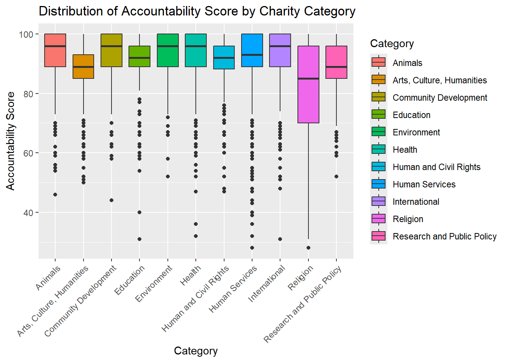
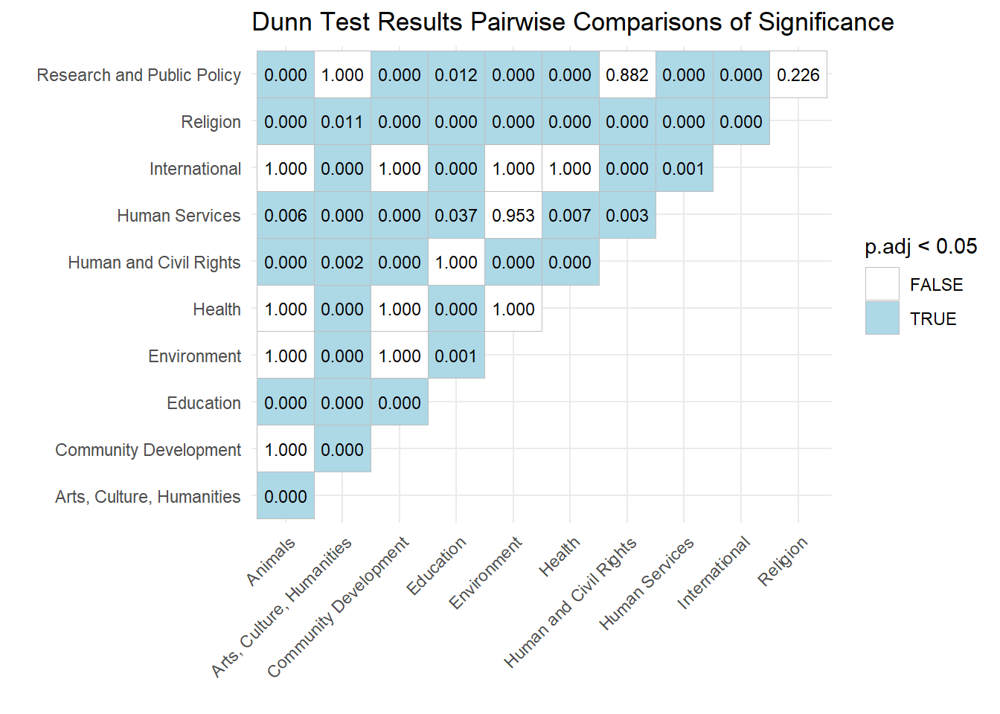
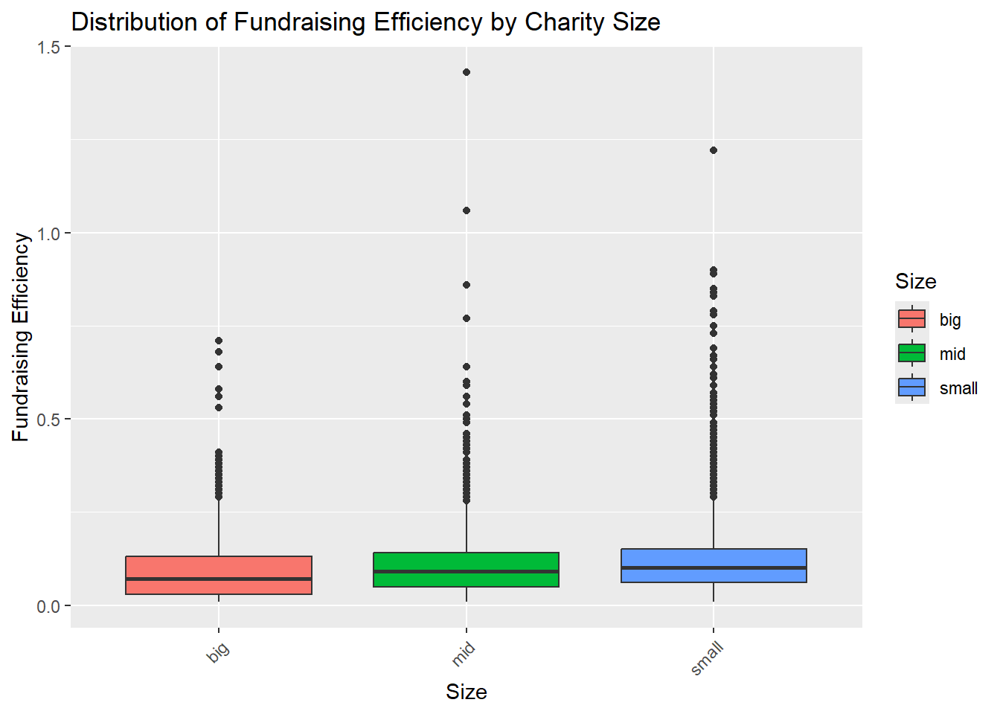
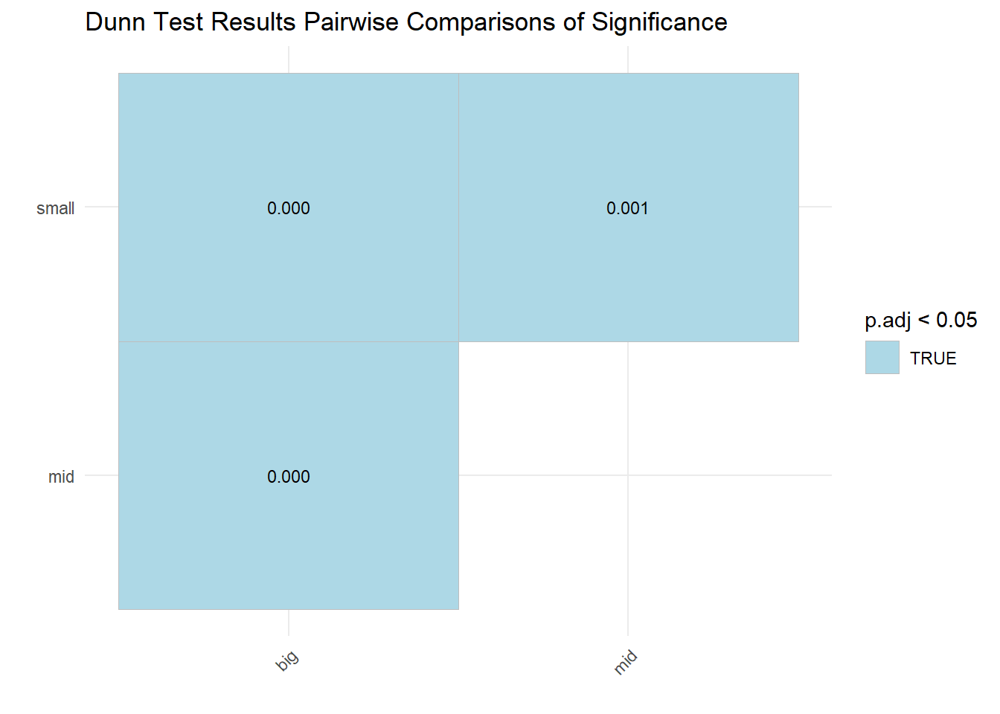
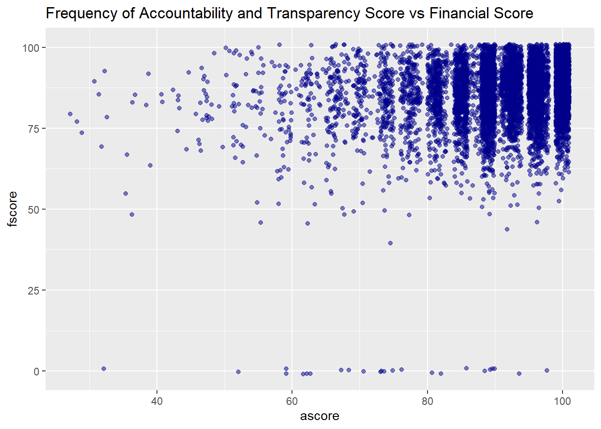

| vars | n | mean | sd | median | trimmed | mad | min | max | range | skew | kurtosis | se | |
|---|---|---|---|---|---|---|---|---|---|---|---|---|---|
| ascore | 1 | 8408 | 90.72 | 9.77 | 93.00 | 92.39 | 5.93 | 28.00 | 100.00 | 72.00 | -1.89 | 5.09 | 0.11 |
| category* | 2 | 8408 | 5.82 | 2.86 | 6.00 | 5.83 | 2.97 | 1.00 | 11.00 | 10.00 | -0.17 | -1.28 | 0.03 |
| fscore | 3 | 8408 | 85.95 | 9.76 | 87.46 | 86.82 | 8.14 | 0.00 | 100.00 | 100.00 | -2.47 | 16.55 | 0.11 |
| fund_eff | 4 | 8408 | 0.11 | 0.09 | 0.09 | 0.10 | 0.07 | 0.01 | 1.43 | 1.42 | 2.94 | 20.22 | 0.00 |
| size* | 5 | 8408 | 2.31 | 0.75 | 2.00 | 2.39 | 1.48 | 1.00 | 3.00 | 2.00 | -0.57 | -1.01 | 0.01 |
Exploration of Charity Scores Dataset
Data Source
Data: https://www.kaggle.com/datasets/katyjqian/charity-navigator-scores-expenses-dataset/data
Introduction
In this study, I’ll be assessing whether or not accountability & transparency score for charities differs across different categories of charities, whether there is a difference in fundraising efforts across small, medium, and large charities, and if there is any correlation between financial score & accountability score. These questions are important because it may help potential donors be more informed on which charities they choose to donate to. Additionally, these questions may help guide policies and identify potential gaps in non-profit resources.
Questions
- Do certain categories of charities have higher accountability & transparency scores?
- Is there a difference in fundraising efforts across small, medium, and large charities?
- Is there any correlation between financial score & accountability score?
Data
Context
Charity Navigator is an objective, nonprofit evaluator. The dataset used for this project comes from Kaggle, with 8,400 observations and 23 variables. While the dataset contained twenty-three variables, for purposes of this study, six were used. The owner of this dataset states that “this data was webscraped in May 2019 but uses rating details mostly from 2017” (Qian, 2019). Charity Navigator has over 225,000 charities rated, therefore this is a small sample of the data available. Access to full, current data via Charity Navigator’s API is available upon paid request. While Charity Navigator offers an exceptional user experience with ease of searching, this analysis aims to take key metrics available and perform statistical analysis and interpretation upon them to answer key questions as outlined above.
Variable Definitions
Fundraising Efficiency in Dollars (fund_eff): Numeric variable with a range of 0.01-1.43 and is defined as the amount of money spent to raise one dollar in donations. A lower fundraising efficiency value is typically perceived as better as it is less money required to spend.
Accountability and Transparency Score (ascore): Numeric variable capable of taking on values 0-100, with range of 28-100 within the dataset. Represents how open and transparent charities are with their data.
Category (category): Character variable representing type of charity, with 11 different categories. Category was transformed to a factor variable with 11 levels for analysis.
Financial Score: (fscore): Numeric variable capable of taking on values 0-100, which is the actual range within the dataset as well. Represents the financial performance of the charity.
Size (size): Character variable of charity is based on total expenses . Charities were classified into three sizes: small (less than $3.5 million), medium ($3.5 million to $13.5 million), and large (greater than $13.5 million). Size was transformed into a factor variable with 3 levels for analysis.
Descriptive Statistics
Table 1
Descriptive Statistics of Used Variables
Table 2
Descriptive Statistics of Accountability & Transparency Score by Charity Category
| category | mean | median | n | IQR | |
|---|---|---|---|---|---|
| Animals | Animals | 92.41 | 96 | 454 | 11.00 |
| Arts, Culture, Humanities | Arts, Culture, Humanities | 88.54 | 89 | 1218 | 8.00 |
| Community Development | Community Development | 93.58 | 96 | 803 | 11.00 |
| Education | Education | 90.34 | 92 | 667 | 7.00 |
| Environment | Environment | 92.84 | 96 | 429 | 11.00 |
| Health | Health | 92.23 | 96 | 847 | 11.00 |
| Human and Civil Rights | Human and Civil Rights | 89.73 | 92 | 346 | 7.75 |
| Human Services | Human Services | 91.49 | 93 | 2379 | 11.00 |
| International | International | 92.17 | 96 | 610 | 11.00 |
| Religion | Religion | 81.56 | 85 | 450 | 26.00 |
| Research and Public Policy | Research and Public Policy | 87.99 | 89 | 205 | 11.00 |
Table 3
Descriptive Statistics of Fundraising Efficiency by Charity Size
| size | mean | median | n | IQR | |
|---|---|---|---|---|---|
| big | big | 0.09 | 0.07 | 1450 | 0.10 |
| mid | mid | 0.11 | 0.09 | 2908 | 0.09 |
| small | small | 0.12 | 0.10 | 4050 | 0.09 |
Methods
Research Question 1 & 2
For research question 1 (model one), and question 2 (model two), I will be utilizing Kruskal-Wallis Test’s to compare distributions between variables. The reason for choosing this statistical test is due to the structure of the data. A Levene’s Test was performed on both models to check for homogeneity of variance. The results of the test showed evidence of heteroscedasticity (p < 0.05) for model one. However, model 2 showed no evidence of heteroscedasticity (p > 0.05). Additionally, the data was plotted and was found to be non-normally distributed. Despite model two being homoscedastic, to handle heteroscedasticity of model one and the non-normality of both models, the non-parametric alternative to one-way ANOVA, Kruskal-Wallis was used on both models. Kruskal-Wallis is a non-parametric way to compare distributions of more than two independent groups that does not need to adhere to traditional one-way ANOVA assumptions.
For significant Kruskal-Wallis results, Dunn’s test was performed to determine which specific categories in model one differ significantly from each other in accountability score and which sizes in model two differ from each other in fundraising efficiency.
To support findings, boxplots were used to visualize the distribution of the data as well by showing the minimum, first quartile, median, third quartile, maximum, and outliers.
Research Question 3
For research question 3, Spearman’s Correlation Test was used to determine the correlation between Accountability & Transparency Score and Financial Score. Spearman’s Correlation is a nonparametric alternative to Pearson’s Correlation. Unlike Pearson’s, it is robust to nonlinear, non normal data. It is used to determine the relationship between two numeric variables.
To support findings, a jittered scatter plot was used to visualize the correlation relationship between Accountability & Transparency Score and Financial Score. The plot was jittered due to the nature of the data being discrete, which caused overlapping values. Jittering the plot sightly allowed for an easier to understand visual that still preserved the meaning.
Results
Research Question 1 - Do certain categories of charities have higher accountability scores?
A Kruskal-Wallis test was conducted to examine differences in accountability & transparency scores across charity categories. The overall effect was statistically significant, \(\chi^2\)(10) = 626.69, p < 0.05. Based on this, it can be concluded that there is indeed statistical evidence of differences in accountability scores across charity categories. Additionally, it was found that the effect size was moderate \(\eta^2_{H}\) (0.07), indicating that category explains a moderate amount of the variability in accountability & transparency scores. A post-hoc test was performed to determine in which ways they differed. Findings of this are discussed below.
To further investigate the results of the significant Kruskal-Wallis test, a post-hoc Dunn’s Test was performed to determine which charity categories differed from each other in accountability & transparency score. Results found 40 significant results out of 55 possible pair-wise comparisons (p < 0.05). Meaning that 40 charities category-pairs had mean rank accountability & transparency scores that differed significantly from each at least one other category. For example, Animal charities (median = 96) have significantly higher accountability & transparency scores than Arts, Culture, Humanities charities (median=89), p < .05, whereas Animal charities (median = 96) had no significant evidence of a difference in accountability & transparency score with Community Development charities (median = 96). The rest of the results of this test are seen in the figure below, which highlights the significant pairs in light blue, which are the pairs that suggest a significant difference in accountability & transparency scores.
The box plot below supports the finding that accountability & transparency scores differ across charity categories. However, the practical differences may be smaller than implied. In particular, most charity categories had median accountability & transparency scores greater 90, however, Arts, Culture, Humanities (median = 89), Research and Public Policy (median = 89), and Religion (median = 85), all had median accountability & transparency scores less than 90. Most charity categories have an IQR of around 11, however, some charity categories had far greater IQR’s, such as Religion which has an IQR of 26. The charity categories with the lowest IQRs were Education (IQR = 7), Human and Civil Rights (IQR = 7.75), and Arts, Culture, Humanities (IQR = 8). The charity with the most outliers appeared to be Human Services. Inversely, Religion, likely due to having the highest IQR, actually had the lowest number of outliers. Based on the plot, the whisker extends past the majority of the outliers of the other categories, meaning that despite having fewer outliers, religion still has the highest variability.
Figure 1
Distribution of Accountability & Transparency Score by Charity Category

Figure 2
Dunn Test Results Pairwise Comparisons of Significance for Accountability & Transparency Score by Charity Categories

Research Question 2 - Is there a difference in fundraising efforts across small, medium, and large charities?
A Kruskal-Wallis test was conducted to examine differences in fundraising efficiency across different charity sizes. Results indicated that fundraising efficiency differed across differently sized charities. The overall effect was statistically significant, \(\chi^2\)(2) = 175.51, p < 0.05. Additionally, it was found that the effect size was small \(\eta^2_{H}\) (0.02), indicating that charity size explains a small amount of the variability in fundraising efficiency. A post-hoc test was performed to determine in which ways they differed. Findings of this are discussed below.
To further investigate the results of the significant Kruskal-Wallis test, a post-hoc Dunn’s Test was performed to determine which charity sized differed from each other in mean rank fundraising efficiency. Results found that all 3 pairwise comparisons differed from each other significantly (p < 0.05). However, despite statistical significance, the distributions experienced a large amount of overlap. It was found that small charities (median = 0.1) were the least efficient, as they need to spend approximately $0.10 to raise $1, whereas mid-sized charities (median = 0.09), need to spend $0.09 to raise $1, and large charities (median = 0.07), need to spend $0.07 to raise $1.
The box plot below supports the finding that fundraising efficiency differs across charity sizes. However, the practical differences may be smaller than implied. The median for small (median = 0.10), mid-sized (median = 0.09), and big charities (median = 0.07) was all very similar. All three sizes had an IQR of 0.09-0.10.
Figure 3
Distribution of Fundraising Efficiency by Charity Size

Figure 4
Dunn Test Results Pairwise Comparisons of Significance for Fundraising Efficiency by Charity Sizes

Research Question 3 - Is there any correlation between financial score & accountability score?
A Spearman’s Rank Correlation Test was conducted to examine the correlation in accountability & transparency score and financial score. The overall effect was statistically significant, \(r_s\) = 0.12, p < 0.05. This indicates that there is a statistically significant but very weak correlation between the two variables.
The scatterplot below supports these findings as it shows a very, very slight positive upward trend, which is in line with Spearman’s Rank Correlation Test \(r_s\) = 0.12. Additionally, it can be inferred that there is a large amount of overlap in the data, which makes sense given that the data is discrete.
Figure 5
Correlation between Accountability & Transparency Score and Financial Score

Discussion
Interpretation
Based on the statistical tests above, it can be inferred that for research question 1, there is statistical evidence that certain categories of charities have higher mean rank accountability & transparency scores. However, the differences appear to be quite close together with all categories having median accountability & transparency scores between 85-100. Despite this being a seemingly small difference, this may be a massive difference to a donor of $250,000 compared to a donor of $25. Additionally, visualization of the data through theboxplot showed that some categories had high variability, making those categories potentially less trustworthy based on the sample provided.
For research question 2, there is statistical evidence that that all three sized charities have statistically significant differences, however, the size of these difference may be small. Similar to above, the practical difference at a small scale may not matter, but on a larger scale these differences could mean a lot. Using the example number above, it could take a small charity (median 0.10) $25,000 to raise $250,000, whereas it could take a large charity (median = 0.07) $17,500 to raise that same $250,000. That is $7,500 difference.
Based on Spearman’s Correlation, there is evidence that charity accountability & transparency score’s and Financial Score’s had statistically significant correlation. Due to the low, but positive \(r_s\), despite the test being significant, the correlation is quite weak, given that \(r_s\) ranges from -1 to +1. This suggests that despite a statisitically significant correlation, depending on the use case, the practical results may be quite weak. The strength of the correlation was lower than expected, as typically one would expect charities that were accountable and transparent to also have good financial performance. However, the results instead suggest that though accountability and financial performance are somewhat related, they remain largely independent.
Limitations
As mentioned previously in this study, this dataset only contained 8,400 observations. Though is a sufficient number for statistical tests, it is no where near representative of the true number of charities registered in the United States. Charity Navigator alone has evaluated over 225,000 charities in the United States. Additionally, the data is seven years old, therefore is quite outdated and therefore any interpretations made of it should be made with the knowledge that the data is not indicative of current patterns.
Suggestions
For future analysis, paying for the comprehensive and up-to-date API from Charity Navigators would provide much more accurate data. The same models may be used, but the results will likely differ when applied to new and current data. Additionally, it would be very interesting to see if an accurate regression model could be made of this data. The data would need transformations in order to be used in a regression. I originally had made code to determine states with the highest charity accountability & transparency scores, however, the numbers per state appeared too low to make a reasonable analysis, therefore I decided it was best saved for a future suggestion. While some states had 400+, some had as low as 8. Utilizing the API would have made that question far more reasonable and valuable.
Sources
Qian, K. (2019, May 4). Charity navigator scores expenses dataset. Kaggle. https://www.kaggle.com/datasets/katyjqian/charity-navigator-scores-expenses-dataset